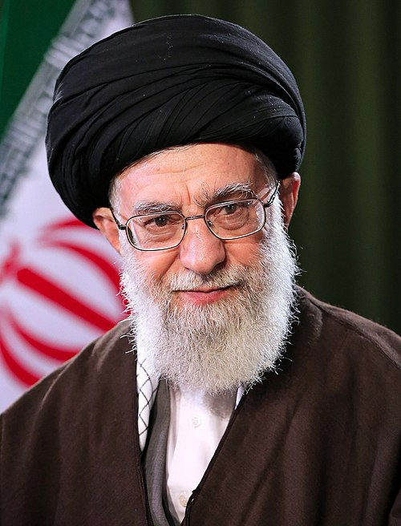

I. Al-Aqsa Flood: Igniting the Middle East Powder Keg

On October 7, 2023, Hamas launched a surprise attack on Israel from Gaza, codenamed "Al-Aqsa Flood," killing approximately 1,200 Israelis. Israel immediately declared a state of war and launched a massive military operation against Gaza.
The conflict rapidly spread from Gaza across the entire Middle East. Lebanese Hezbollah opened fire on Israel from the north, Yemen's Houthis blockaded Red Sea shipping lanes, and Iraqi Shiite militias attacked US military bases. Iran's "Axis of Resistance" was fully activated, with multi-front conflicts erupting simultaneously across the region.
Iran's network of regional allies is known as the "Axis of Resistance," comprising Lebanese Hezbollah, Palestinian Hamas and Islamic Jihad, Yemen's Houthi movement, and Iraqi Shiite militias. Stretching from the Persian Gulf to the Mediterranean, this alliance serves as Iran's frontline force against the US and Israel.
II. 2024: Israel-Iran Direct Confrontation
2024 was the pivotal year in which Israel and Iran transitioned from proxy warfare to direct military confrontation.
By the end of 2024, Israel had systematically dismantled Iran's regional allies—Hamas in Gaza and Hezbollah's senior leadership in Lebanon were methodically eliminated, including Hezbollah leader Nasrallah and numerous other commanders. Iran's "Axis of Resistance" suffered unprecedented devastation.
III. The Twelve-Day War: June 2025
On June 13, 2025, Israel launched massive airstrikes across Iran, bombing nuclear facilities and military targets. The US struck three Iranian nuclear facilities in coordination. This 12-day conflict marked the first time the United States directly struck Iranian territory.
A ceasefire agreement took effect on June 24. But the wounds and hatred left by the war could not be erased. The ongoing fifth round of Iran-US nuclear talks was also suspended.
The Twelve-Day War was the direct prelude to the full-scale war of 2026. It proved that the US and Israel were both willing and able to strike Iranian territory, and it made Iran acutely aware of its own vulnerability. Beset by both internal and external crises, Iran's will to resist and desire for retaliation were simultaneously intensified.
IV. Five Rounds of Talks: A Window for Peace
From April to May 2025, Iran and the United States held five rounds of indirect nuclear negotiations in Oman and Italy—the two delegations sat in separate rooms, communicating through intermediaries.
The sixth round was originally scheduled for June 15, 2025 in Muscat. But on June 13, Israel launched airstrikes. The Omani Foreign Minister announced that the talks "would no longer take place."

V. Internal Unrest: Iran's Darkest Hour
On December 28, 2025, mass protests erupted in multiple Iranian cities. Initially driven by public anger over inflation, soaring food prices, and the plummeting rial, the demonstrations rapidly escalated from economic grievances to demands for regime overthrow.
Years of economic sanctions + the trauma of the Twelve-Day War + the humiliation of destroyed nuclear facilities—these compounding factors pushed Iranian society to its breaking point. Besieged from within and without, the regime faced an unprecedented challenge.
On the other side of the ocean, this internal turmoil was seen as a "God-given opportunity."
VI. Military Buildup: The Final Countdown
Beginning in January 2026, the United States launched the largest military buildup in the Middle East since the Twelve-Day War of 2025.
On January 28, 2026, Trump publicly declared: "A massive fleet is heading to Iran." He emphasized that "Iran cannot have nuclear weapons" and urged Iran to "quickly come to the negotiating table."
Yet even as military threats mounted, the window for negotiations had not fully closed:
In the early hours of February 28, 2026, the United States and Israel launched a massive joint airstrike codenamed "Operation Epic Fury." Just 72 hours after the declaration that a "historic deal was within reach," bombs fell on Tehran.
Negotiating on one hand, amassing forces on the other; signaling peace while preparing a devastating strike. This was a war planned at the negotiating table.
From the 2023 Al-Aqsa Flood to February 28, 2026, the escalation chain follows a logic that is clear and brutal: each crisis compressed the space for peace, each act of retaliation raised the intensity of the next confrontation. Iran's internal and external crises gave the US and Israel a window of opportunity, while the negotiations served as cover for war preparations. By the time Iran's Foreign Minister uttered the words "within reach," fate had already been sealed.